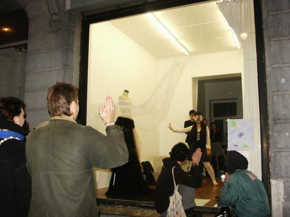
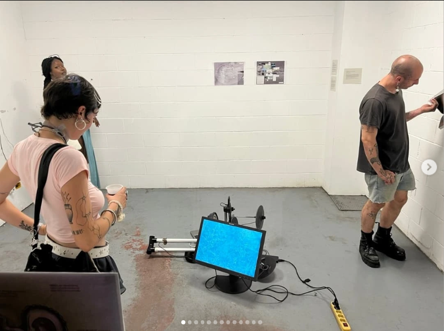
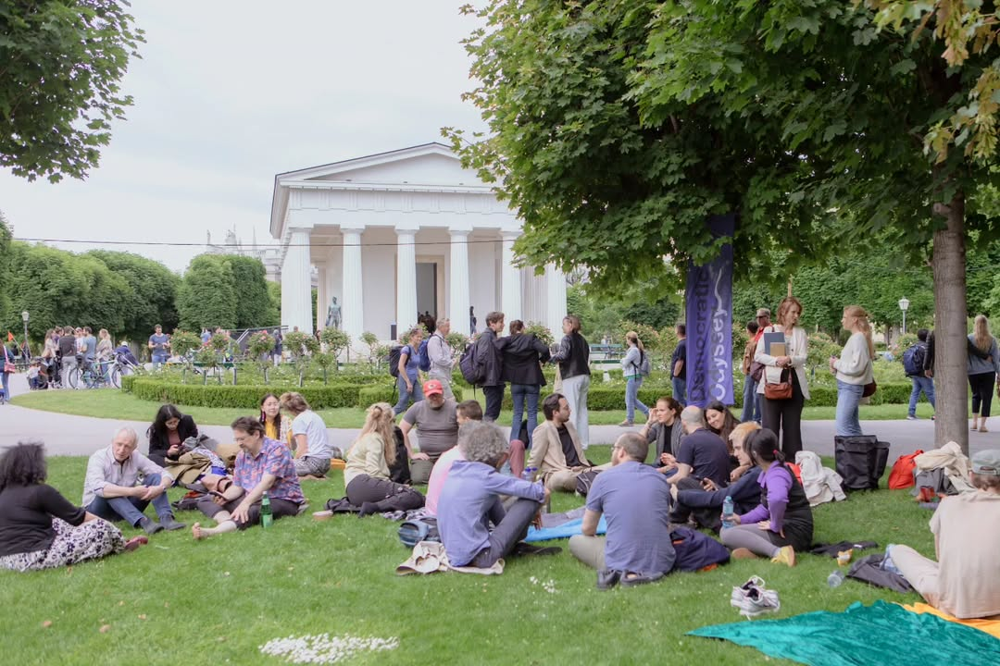
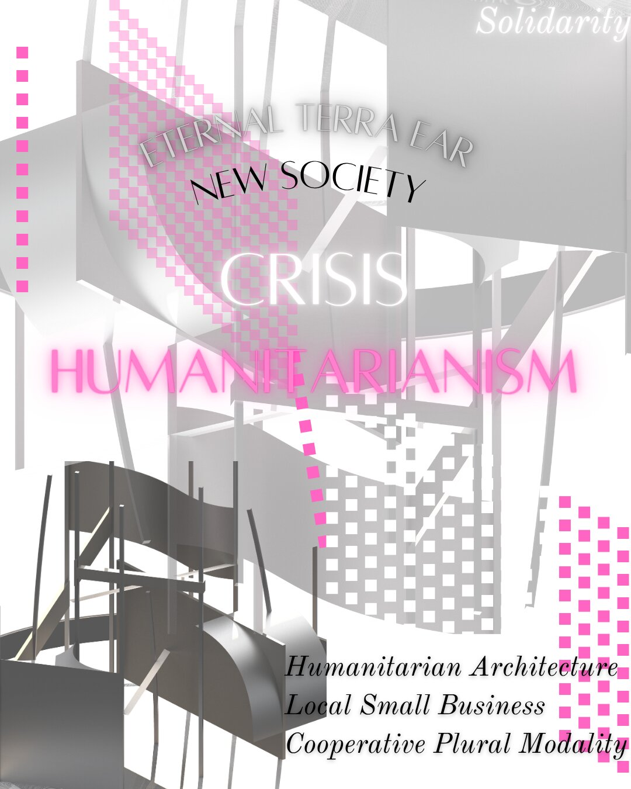

Brussels

Milan

Vienna Node

Crisis Post-Humanitarianism
“Rooms are where we frame our existence... there are rooms whose walls are made from tent fabric, but within all of us is the tendency to make a space ours, a site that begs familiarity and invites others to it.”— Chloe Aiko Stark, Room as Policy Making